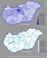

A tegnapi EP-szavazás a hazai
politikai élet számára talán fontosabb volt, mint az Európai Unió ügye. A Jobbik sikere
óriási pofon a legnagyobb vesztesnek, az erőteljesen gyűlöletkampányoló SZDSZ-nek, amely
ügyetlen reklámfogásai is kellhettek ahhoz, hogy ez az eredmény létrejöhessen.
Nap
közben nagyon bizakodóvá váltam, ahogyan az előzetes részvételi számot figyeltem. Bár
európai szinten kifejezetten sokan mentek el szavazni Magyarországon (mely az erősen
kormányváltó hangulatnak tudható be), azért ez a választók számához képest elenyésző arány.
Ez és az egyre romló idő a Jobbiknak kedvezett, mely a napokban várt két mandátum helyett a
politikum számára meglepetést jelentő háromhoz jutott.
Hat olyan megyében, ahol eddig
az MSZP stabilan szerepelt, most a Jobbik javára esett vissza. A Jobbik nem csupán a
radikális és apolitikus réteget, hanem egy szocialista szavazóbázist is maga mellé állított,
hála a nagyon enyhe médiatámadásoknak, sőt az őket ellenző, fonák módon pedig ezért a
malmukra vizet hajtó MSZP- és SZDSZ-propaganda miatt. Talán nem túlzás, ha azt állítjuk, hogy
akár két mandátumot is ajándékba adtak a Jobbiknak azzal, hogy nemcsak a politikához, de még
a tömegpszichózishoz és az országos marketinghez sem a legjobb tehetségükkel álltak az
elmúlt néhány hétben.
A Jobbik számára az eredmény nagyszerű, hiszen a harmadik erővé
válásuk úgy jött létre, hogy az szinte ajándék: két hónapja még a politikai realitásban
gondolkodó Jobbik-vezetés sem számíthatott ilyen viharos sikerre. Az MSZP széthullása miatti
vákuum beszívta a pártot, melynek csupán annyi a dolga, hogy most ne tevékenykedjék a saját
érdeke ellen. Az MSZP csupán egyetlen mandátummal szerzett többet, azaz a kérdést lassan
ekképp is feltehetnénk: ki a második erő? Ez viszont az eddiginél fokozottabb
szélsőjobboldaliság-ellenes hisztériát kelthet, úgyhogy nem feltétlenül jó stratégiai
lépés.
A Jobbik számára kényelmes a három mandátum. Bár a harmadik listatag, Szegedi
Csanád vélhetően nem számított erre az eredményre a jelölése pillanatában. Eredetileg Novák
Előd volt a Jobbik EP-listájának harmadik helyén, de OVB-delegálása miatt lekerült onnan.
Szegedi nyilatkozatai szerint főként a belföldi problémákkal, például a cigánybűnözés
visszaszorításával szeretne foglalkozni, az egyes országok belügyeihez nem nyúló Európai
Parlamentben pedig erre aligha van lehetősége. A kiszivárgott információk alapján pedig Szegedi
talán az alelnökségnél is nagyobbra tenné a mércét, ha azonban van ambíciója a párt
vezetésében aktívabban szerepelni, ebben a brüsszeli feladat csak hátráltatja.
A
Jobbik belpolitikai célokat nehezen érhet el az EU-ból. Vélhetően folytatják a populista
célok hangoztatását, valamint az EU-t érintő, egyébként átgondolt irányvonaluk mentén
dolgoznak. Várható az EP-ben akár egy euroszkeptikus, szélsőjobboldalinak titulált csoport
összeállása is, ugyanis európai szinten észlelhető az ilyen irányvonalak erősödése, mely
radikalizálódás egyébként hónapok óta megfigyelhető.
Az MDF egyetlen mandátuma
szintén óriási siker. Csak a Jobbik és az MDF volt az a párt, amely nem pártimázsra, hanem
személyekre szabta kampányát. Az MDF húzása Bokros Lajossal a párt helyzetét tekintve jó
volt, de tudni lehetett, hogy nem elegendő. A Jobbik számára pedig Morvai tökéletes
választás volt. A művelt, empatikus nő képe mindig szavazatokat hoz, ahogyan pedig Majláth Ronald
politológus fogalmazott: az elmúlt három évben a radikálisok egyetlen férfias karaktert
tudtak kitermelni a magyar politikában, Morvai Krisztinát.
Ehhez azonban a
Fidesznek nagyot kellene hibáznia. A párt számára az előrehozott választások komoly
politikastratégiai hibát jelentenének. Bár logikusan elvárható lenne egy működő
demokráciában, hogy a választók ilyen fokú elfordulása nyomán akár kormányváltásra is sor
kerülhet, a Fidesznek több oka is van rá, hogy ezt ellenezze. Az egyik a legjobban felfogott
önérdek: tudják, hogy a jelenlegi helyzetből sikeresen nagyon nehéz kijönni, a kormányzó erő
népszerűsége pedig hosszú távon esni szokott. De szintén komoly ok még a Jobbik: ahogyan
Orbán Viktor korábban kijelentette, hogy a Jobbik ellenség, az alapján értékeli most a
helyzetet. Ha a jövő héten parlamenti választásokat tartanának a magyarok, a Jobbik nemcsak
bejutna, de nagyon komoly erővel bíró párt volna. Ezt a Fidesz (sem) akarja, ezért a
következő egy évben az egyik feladata a Jobbik szétverése és hiteltelenné tétele
lesz. (A támadás a Jobbik pénzügyei környékén várható, mert itt a párt belső tagjai szerint is új mozgások figyelhetők meg.)
Bár új pártként valóban
hibák várhatók a Jobbiktól, sokkal nagyobb súllyal esnek latba azok a nyilatkozatok,
melyekben olyanok véleménye és érdekei mellett állnak majd ki, akiket a politikai elit
aligha képvisel. A Jobbik számára viszont egy szempontból vészes időszak is közeledik:
szavazóik között a radikális jobboldalin kívül néhány valódi szélsőjobboldali és az ismert
okok miatt tartósan baloldali is van. Menthetetlen, hogy nem lesznek képesek e széles
spektrum valamennyi tagjának megfelelni. A természetes módon leváló embereket a sikeres és
eredményes munkájukért hozzájuk pártolóknak kell pótolniuk.
És még egy gondolat, mely
később a legfontosabb lehet: a Lehet Más a Politika nevű szervezet a Humanista Párttal karöltve az
SZDSZ-énél is jobb eredményt ért el. A mindössze néhány hónapja létező LMP tehát a Jobbik
mellett szintén a rendszerváltásnak nevezett politikai folyamat utáni magyar
politikatörténetben példátlan szárnyalást él át. A százmilliós kampány erre volt elég, de a
párt tovább fog épülni, az őt pénzelő gazdasági körök pedig készülnek a következő
összecsapásra. Éppen az történik, amit a Bombagyár Rádióban néhány hete jeleztünk: az SZDSZ-t
fölváltja egy újabb liberális, a baloldalhoz köthető, komolyan pénzelt szervezet. A folyamat
viszonylag lassú és elfedik a fontosabbnak vélt történések, de azért jól tetten érhető. Az
pedig nem politikai, hanem alapvető társadalmi-gazdasági tény: ha valaki komoly pénzösszeget
fektet valamibe, abban hasznot remél. Ezért kapott pénzt a Jobbik is a kampányra, bár jóval
kevesebbet. Őket az emberek választották, míg az LMP-t a pénztőke. A Jobbik képviselőit
szeretném figyelmeztetni: legyen akciótervük, ha puszta véletlenségből hirtelen az
SZDSZ–LMP–HP választási koalícióval találnák szemben magukat. Érdekes összecsapás lesz
még itt.